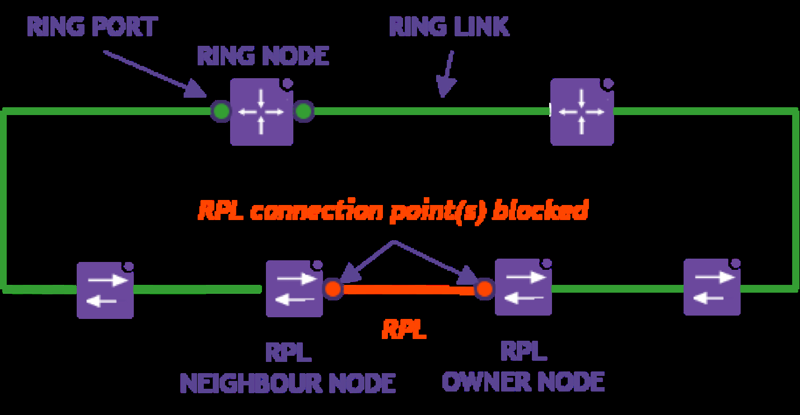
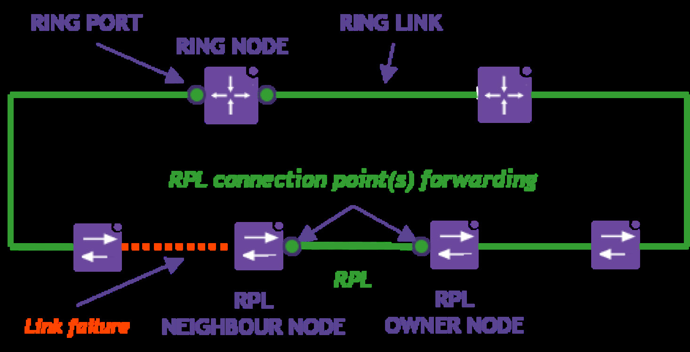
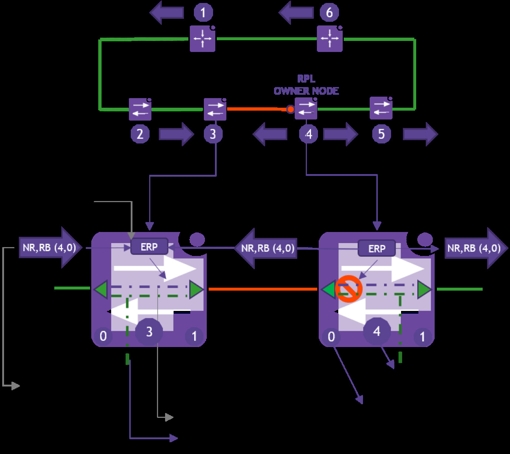
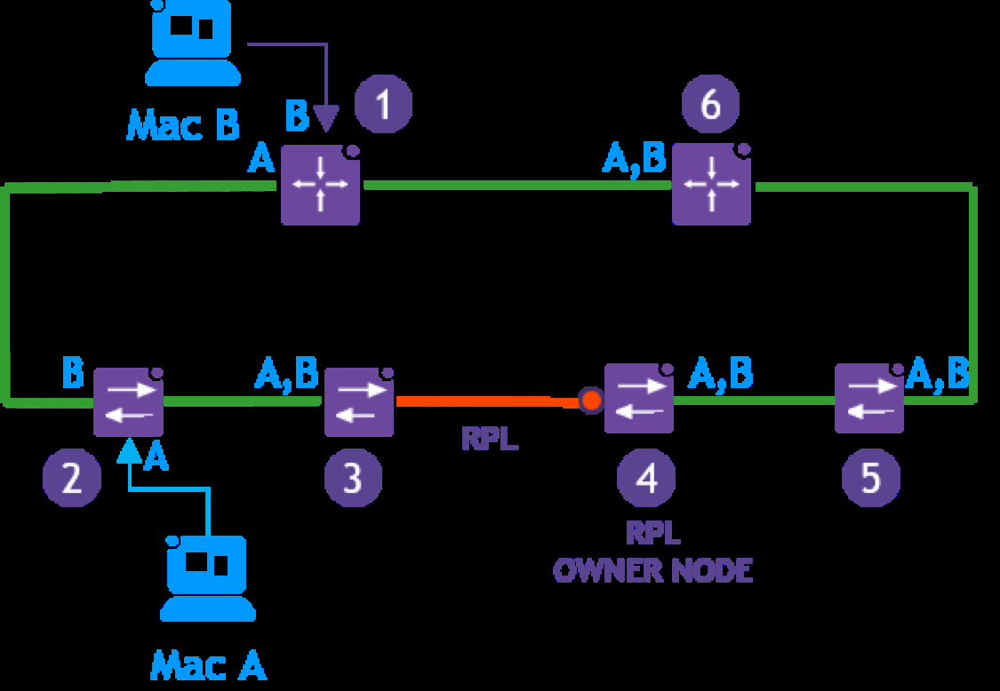
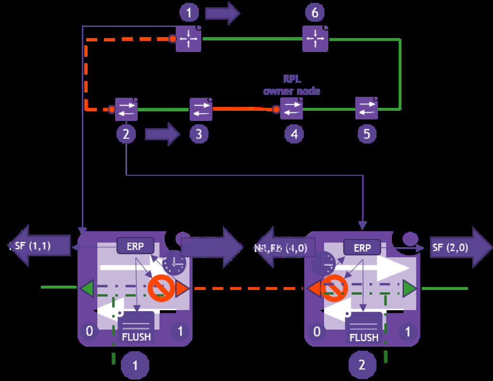
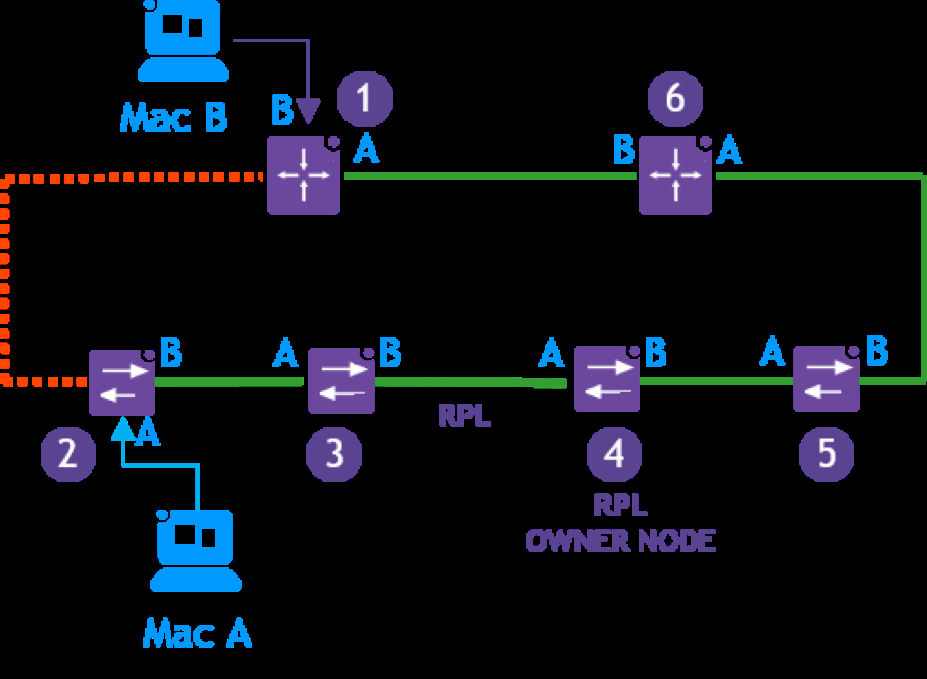
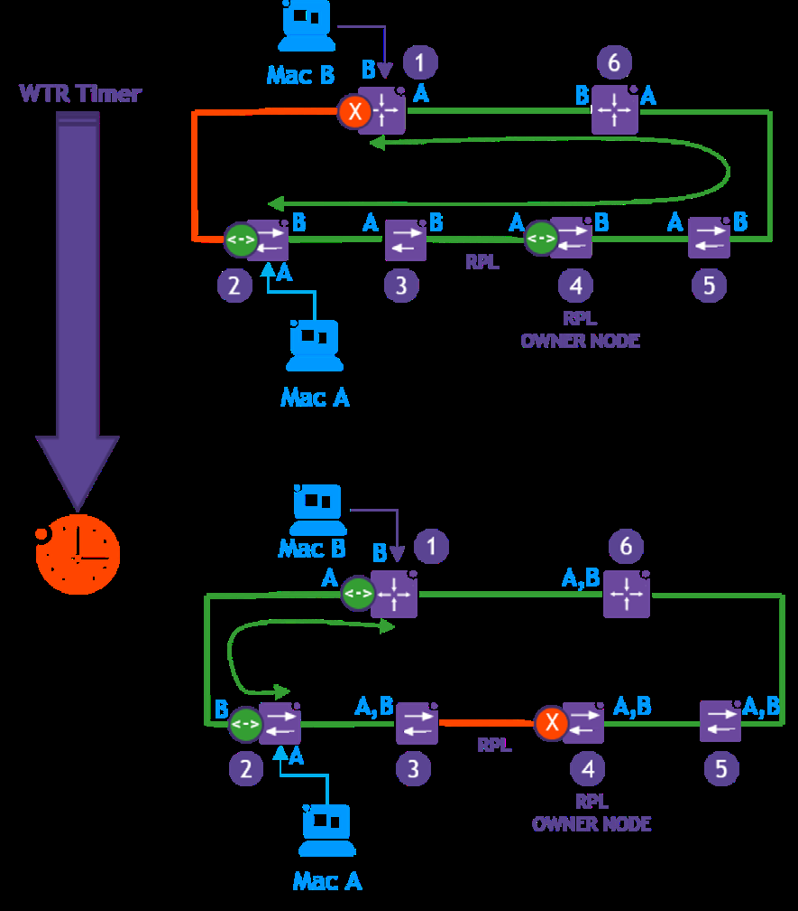

sol-erp-ring-mechanism
R（触发场景）
- 设计或评审以太环网（ERP/ERPS）保护方案，规划 RPL 与 RPL Owner 位置
- 排查环网故障切换/回切异常（反复 flush、过期消息成环、间歇故障抖动）
- 解释 50ms 收敛指标的成立条件与误区
- 决定 revertive（自动回切）还是 non-revertive（管理员 clear）
I（核心理念）
防环靠"任一时刻只阻塞一条环链路"（P1，原文p7 ）：正常态 RPL Owner 阻塞 RPL 并周期发 (NR, RB)（P2）；故障时解阻 RPL 保连通。故障处理是"检测节点三连动作 + 全环两次 flush"（P4/P5，原文p8-9 ）：本地阻塞、FDB flush、双向发 SF；其余节点收首个 SF 即 flush，靠 (Node ID, Blocked Port ID) 二元组去重防反复 flush。定时器体系各司其职：hold-off 过滤间歇故障、guard 屏蔽过期 R-APS 防环、WTR（须长于 guard）防抖后回切（P3/P8/P10）。



A1（行动框架）
- ERP 故障-恢复状态机框架（F3，原文p14-15 ）：故障检测（hold-off 0-10s 可调）→ SF 生成发送 → 环传播（四前提内 ≤50ms）→ 处理与 FDB flush；规划时逐段核对 50ms 四前提（无拥塞/全 idle/节点<16/光纤<1200km，P17）
- 恢复模式选型框架（F2，原文p12 ）：能接受回切短暂扰动 → revertive（guard→NR→WTR→(NR,RB) 全网回切）；关键业务求稳 → non-revertive（管理员 clear 或维护窗口，C7）
A2（操作步骤）
- 单链故障走查（C2，原文p8-10 ）：hold-off 到期 → 两端节点本地阻塞/flush/双向发 SF → 其余节点各 flush 两次（去重）→ RPL Owner 收首个 SF 解阻 RPL
- RPL 自身故障（C4/P7，原文p11 ）：流程同上但 SF 带 DNF 位，全环不 flush（拓扑未变）
- 恢复流程（C5/P8-P11，原文p11-12 ）：链路恢复两端起 guard → 发 NR → 低优先级 ID 端先解阻成单端阻塞 → RPL Owner 起 WTR → 到期重阻 RPL + flush + 发 (NR, RB) → 全网 unblock + 一次性 flush
- WTR 期间收到新 SF 即中止回切（C6，原文p11 ）
- non-revertive 运维（C12/P12，原文p12 ）：修复后不回切，管理员在 RPL Owner 上执行 clear
- FDB 重建认知（C3，原文p10 ）：flush 后初期泛洪，双向通信建立后重新学习




E（实证案例）
- 正常态 A/B 用户通信路径与各节点 FDB 快照（C1，原文p8 ）
- 节点 1-2 间断链全流程状态走查（C2，原文p8-10 ）
- 故障后 FDB 重建：先泛洪后学习（C3，原文p10 ）
- RPL 自身故障 DNF 例外场景（C4，原文p11 ）
- 回切恢复全流程与 WTR 被新 SF 打断（C5/C6，原文p11-12 ）
- 收敛时间预算四项分解（C10，原文p15 ）
B（反例与坑）
- 闭合环不阻塞 RPL 必广播风暴（X1，原文p5 ）
- 间歇性链路故障误触发保护切换——hold-off 存在的理由（X2/P3，原文p8 ）
- 重复 R-APS SF 导致反复 flush，靠 (Node ID, Blocked Port ID) 去重（X3/P5，原文p9 ）
- RPL 故障时无谓 flush 拖慢收敛——DNF 位解决（X4/P7，原文p11-12 ）
- 过期 R-APS 消息可能造成环路——guard timer 屏蔽（X5/P8，原文p11 ）
- WTR 期间间歇故障反复回切——WTR 须长于 guard（X6/P10，原文p11 ）
- 自动收敛造成非预期业务中断——非回切模式动因（X7，原文p12 ）
- 50ms 不是端到端收敛：叠加 VRRP/接入-核心 L2 防环协议会显著加长（X12/P18，原文p15 ）
- 超规格环（>16 节点或 >1200km 或拥塞）保不住 50ms（X11/P17，原文p14 ）
来源：Ethernet Ring Protection Switching Application Note（Basic concept + Principle of operation + Convergence，p5-12、p14-15）
仅供内部学习使用 · 教材版权归 ALE Training Services 所有